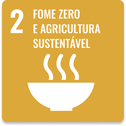
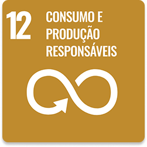

Missão
Promover o acesso à alimentação conectando doadores, voluntários, famílias beneficiárias e pontos de coleta em uma rede organizada, transparente e inclusiva.
Promover o acesso à alimentação conectando doadores, voluntários, famílias beneficiárias e pontos de coleta em uma rede organizada, transparente e inclusiva.
Ser referência nacional em tecnologia social voltada à redução do desperdício de alimentos e ao combate à fome nas comunidades brasileiras.
Transparência, empatia, responsabilidade social, sustentabilidade, respeito às famílias, valorização dos voluntários e incentivo à cultura de doação.
O projeto surgiu da percepção de dois extremos que convivem todos os dias: famílias em insegurança alimentar e toneladas de alimentos sendo descartadas.
A partir dessa realidade, estruturamos uma plataforma digital que organiza o caminho do alimento: do registro da doação ao armazenamento nos pontos de coleta e à entrega final às famílias beneficiárias, sempre com apoio dos voluntários.
Estudos sobre fome, desperdício de alimentos e a dificuldade de organizar doações em grande escala.
Mapeamos o caminho do alimento, do doador ao ponto de coleta e das rotas dos voluntários até cada família.
Desenvolvimento da interface web e do aplicativo, com foco em simplicidade, acessibilidade e transparência.
Registro de cada doação, agendamento de entregas e gestão de estoque nos pontos de coleta.
Voluntários recebem rotas otimizadas para retirar alimentos nos pontos de coleta e entregar às famílias cadastradas.
Doadores, voluntários e empresas parceiras acompanham relatórios de impacto social, com dados de famílias atendidas e alimentos distribuídos.
O Mesa Solidária contribui diretamente com a ODS 2 – Fome Zero e Agricultura Sustentável – e com a ODS 12 – Consumo e Produção Responsáveis, ao reduzir o desperdício de alimentos e ampliar o acesso das famílias beneficiárias a refeições de qualidade.

